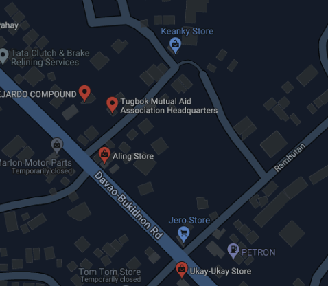

SMAC, the call for acts of human kindness.
SMAC is a non-profit, non-stock organization that was created as a result of the observation of the living situations of the underprivileged parishioners and families who are unable to provide for their members' health care, education, adequate nutrition, hygiene, and morale. Its overarching objective is to raise children who are psychologically and socially mature, who live and practice Christian ideals, who share their religion with their peers, and who enjoy life to the fullest. It gives the kids an education by enrolling them in school, from kindergarten through college, and also gives them the opportunity to learn how to make a living by baking and cooking. It also offers various medical treatments, psychological support, fun and engaging programs, and spiritual upliftment. The children are SMAC's main recipients of the primary beneficiaries.
Problem Facing:
We are focusing on the problem of lack of funds, especially for psychological assessments for the children since based on the research made about SMAC and the affordability of SMAC.
How can this project help?
Our project aims to help solve their problem, not only for the ability to afford do psychological assessments but also to help them with their financial problems and the childrenen. Since our project, it is basically a garage sale we could use it to raise funds and donate it to the institution. Not only we are able to help in their financial state, but we are also able to teach and earn skills. On our projects side, we are able to do MAGIS, the the ability to do more, and the value of Men and Women for others.Community Profile
Institution Name: Sorelle Missionarie dell'Amore di Cristo (SMAC)
Address: Purok 6 Habana Compound 8022 Tugbok Davao City
Contact Person: Sr.Luzviminda C. Pepito, SMAC
Contact Number/s: 09432466811; 082 - 2930949
Vicinity Map

How to get there?
In the starting point of Ateneo de Davao Junior Highschool, you have to go through Matina crossing then after you head to the Talomo proper, you will now go through the Davao Bukidnon Road then you will go through Barangay Catalunan Pequeño, and will now pass through 2 malls which are Gaisano Mall and Visit Mall davao then you will head straight until you are able to reach the destined location.
• Mission ٩(＾◡＾)۶
SMAC is a non-profit, non-stock organization that was created as a result of the observation of the living situations of the underprivileged parishioners and families who are unable to provide for their members' health care, education, adequate nutrition, hygiene, and morale. Its overarching objective is to raise children who are psychologically and socially mature, who live and practice Christian ideals, who share their religion with their peers, and who enjoy life to the fullest. It gives the kids an education by enrolling them in school, from kindergarten through college, and also gives them the opportunity to learn how to make a living by baking and cooking. It also offers various medical treatments, psychological support, fun and engaging programs, and spiritual upliftment. The children are SMAC's main recipients of the primary beneficiaries.
• History ｡^‿^｡
Relevant circumstances that have led to the creation of this institution was child abandonment or neglect, economic incapacity, malnutrition, and poverty. This institution seeked out children who were neglected, abandoned, and even orphaned children living in the streets. Children who were living in extreme poverty to the point some of them are malnourished, lacked hygiene, or was even exposed to violence or sexual abuses. This institution focused on improving these children’s lives through education, restoring their dignity as human beings by giving them a home where they can feel love and care. They wanted to give these children better lives and to be strong in faith instead of being out in the streets living in poverty without getting enough education, care, and support.
Organizer 〔´∇｀〕
• The Mother Foundress of Sorelle Missionarie dell'Amore di Cristo (SMAC), Madre Nanda Giamberardini created the community in order to support families that are struggling. They aim to be able to provide the needs of the neglected, abandoned, and orphaned children. They hope to be able to improve their services and help the ones who are in need.
Beneficiaries (＾▽＾)
• The founder of the institution is Madre Nanda Giamberardini, the Mother Foundress of the Community. In the first arrival of the SMAC sisters on davao in January 17, 1998 where they served the Parish of Toril and took charge of the CARITAS. The observations made them start their whole community, which those observations were they witnessed the poor living conditions of the people. Their overall start of the making of the SMAC community was to help those living in poor conditions.
Benefactors (๑˘︶˘๑)
• Beneficiaries of Sorelle Missionarie dell'Amore di Cristo inc. (SMAC). SMAC is run and managed by the SMAC sisters and the Missionary Sisters of Christ organization. This organization is a non-government child institution. They help the institution by focusing on abandoned, neglected, and orphaned children who require urgent medical and health care.
This is Xandra B. Abellano.
At times she is confident, in other times, she's shy.
She enjoys being in a group where everyone is happy and chatty.
Sometimes, she stays quiet, because her social battery has run out.
Even so, she's still fun to be with, and is a great leader.